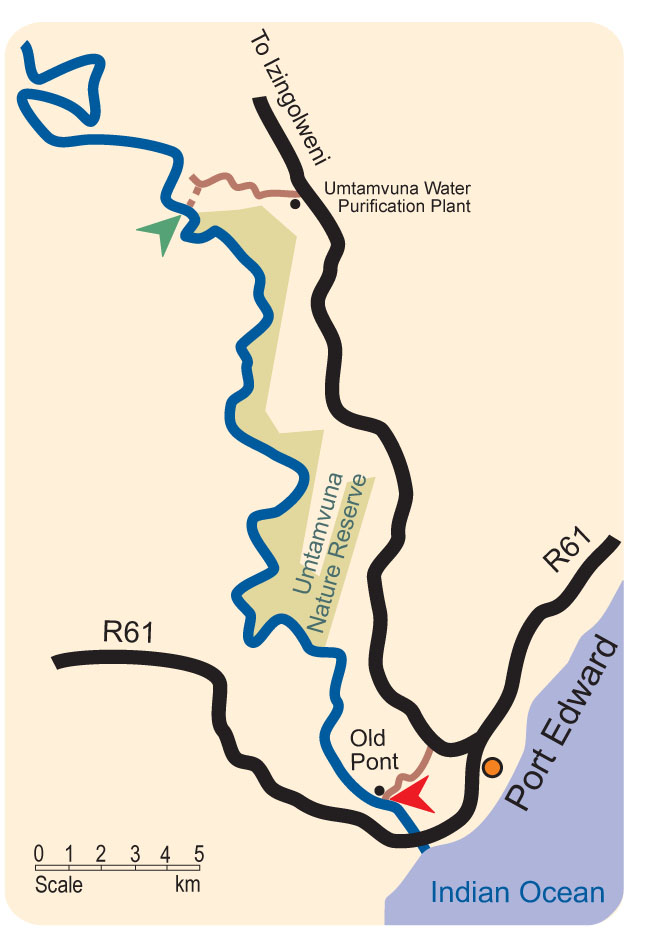
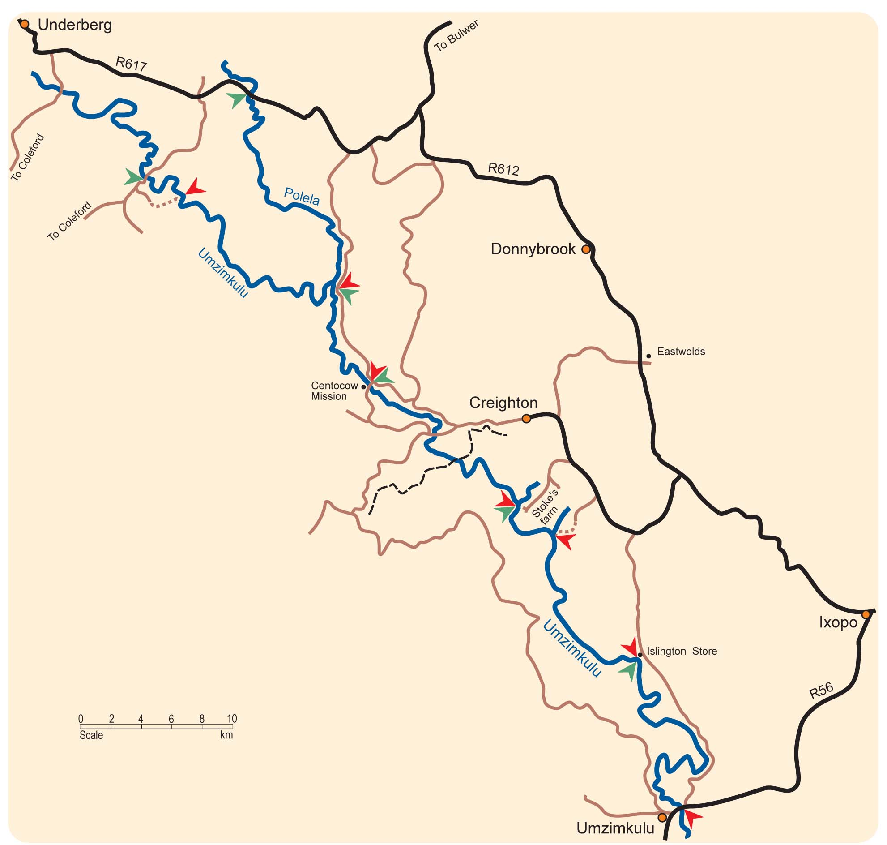
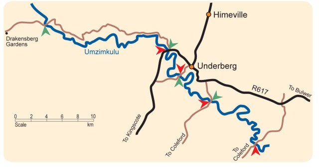
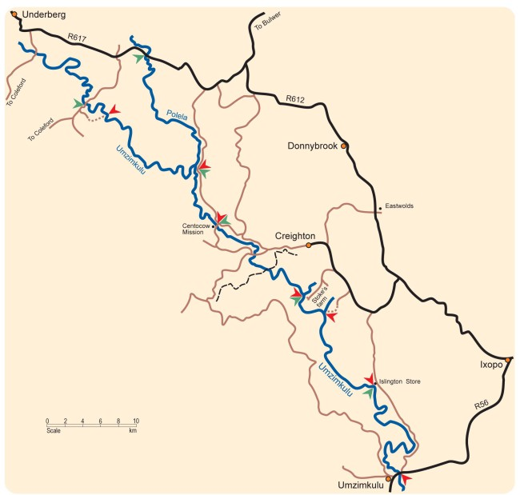
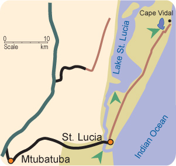
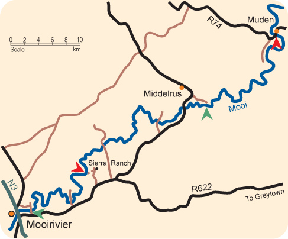
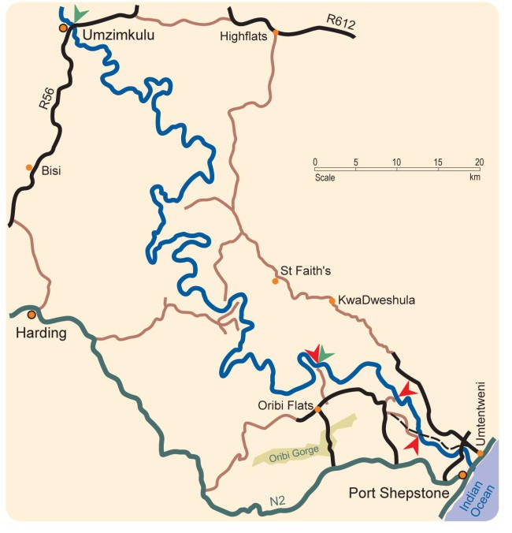
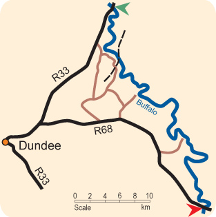
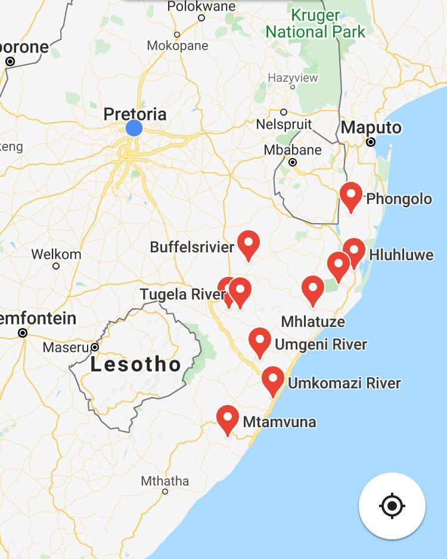

Rivers of KwaZulu-Natal
Umtamvuna River
The Umtamvuna River forms the border between KwaZulu-Natal and Transkei, and the last 40 km of the river to the sea goes through what is arguably the most stunning gorge in South Africa. Some big walls can be seen, with thick tropical vegetation. This must be the closest you can get to a tropical jungle in Southern Africa. It is unspoilt for the most part and extremely remote. Once in the gorge, it is virtually impossible to walk out. Ideal for: Kayak Grade: Mostly 3 to 4, some bordering on 5 Length: 44km Duration: 8 to 10 hours, depending on water level. Preferably a 2 day trip. Type: Technical pool-drop, some sections continuous Put-in: Road from Port Edward to Izingolweni. Turn off to Umtamvuna Water Purification Plant. Don’t enter plant, take road down to river (+-3.5km). Where powerlines cross road, take track to left. Walk down from here or use 4×4 (+-1km). Take-out: Old Pont Caravan Park just outside Port Edward, on road to Izingolweni Dam controlled: No Permits: Pay at take-out
Rivers of KwaZulu-Natal
Polela River
The Polela is one of the Umzimkulu’s significant tributaries. It is a technical creek which is only recommended for competent kayakers with proper scouting skills. There are a couple of waterfalls on this section, but they are easy to be portaged. They can be shot by experienced kayakers, but scout properly and don’t attempt if you are not a hundred percent sure. The rapids are all runnable but some are very steep and tight. At medium to high levels a few nice playspots can even be found, although most paddlers on this section won’t be too worried about playing. Some of the rapids have nasty pour-overs that should be missed or precisely boofed. If you are not faced by this description, enjoy the ride. Ideal for: Kayak Grade: 3 to 5 Length: 23km Duration: 4 to 6 hours Type: Pool-drop creek Put-in: Bridge where R617 crosses river Take-out: Confluence with Umzimkulu, road comes close to river Dam controlled: No Permits: None
Rivers of KwaZulu-Natal
Drak Gardens to 2nd Coleford Bridge, aka Drak Challenge
This section of the Umzimkulu River is mostly used by K1 racers, and an annual two-day race, called the Drakensberg Challenge, is held over the course described here. The start is not far from the source and the river is very small here, but small tributaries feed it constantly, so it gets bigger as one progresses downstream. The water is very clear on this upper part and the escarpment can be seen from the river, making for a pleasant experience. Ideal for: K1 Grade: 1 to 3 Length: 60km Duration: 2 day race Type: Small river with long flats and technical rapids Put-in for first day: 7 Kay bridge, on the way to Drakensberg Gardens Take-out for second day: Second Coleford bridge Dam controlled: No Permits: None
Rivers of KwaZulu-Natal
Umzimkulu River – Thrombosis Gorge
Thrombosis Gorge, or “Thrombi” as it is commonly known, is one of the most popular technical sections in the country. The section includes Thrombi Falls, an 11m waterfall that is probably the most regularly run waterfall in the country. Ideal for : Kayak Grade: 4, at high level 5 Length: 1) 8km 2) 25km Duration: 1) 2-4 hours, depending on amount of scouting. 2) 6-7 hours Type: Pool-drop Put-in: Bridge across river. First turn-off to Coleford from R617 when coming from Bulwer to Underberg. Take-out: 1) Farm 2) Polela confluence Levels paddleable: Look at low-level bridge at put-in. If small pillars are under water, the level is very high. Dam controlled: No Permits: Permission from farmer at first take-out
Rivers of KwaZulu-Natal
Umzimkulu River – Polela to Centocow

This is a fairly steep and rocky section of the Umzimkulu River, where some of the rapids drop several meters in as little distance. At low levels it is rocky and only suitable for kayaks, but when the level gets higher, wildwater racers can enjoy it as well. At all levels it is enjoyable for kayakers who have a bit of experience. Ideal for: Kayak Grade: 3 to low 4 Length: 10km Duration: 3 to 4 hours Type: Pool-drop Put-in: Polela confluence, where road comes close to river Take-out: Centocow mission bridge Dam controlled: No Permits: None
Rivers of KwaZulu-Natal
Umzimkulu River – Centocow to Stoke’s farm
For K1-paddlers, this is a pleasant section of the Umzimkulu River. The first two and last five kilometers have class 2 to 3 rapids, while the middle section is mostly flat with a few class 1 and 2 rapids. Two kilometers before the take out is a class 4/5 rapid which should be portaged by K1-paddlers. Remember to take out before the small waterfall at the end. Ideal for: K1 Grade: 1 to low 3 Length: 18km Duration: 2 to 3 hours Type: Pool-drop Put-in: Centocow Mission bridge Take-out: Stoke’s farm Dam controlled: No Permits: Farmer at Stoke’s farm is very friendly. At least greet him when you put in.
Rivers of KwaZulu-Natal
St. Lucia Estuary
Apart from all the rivers, there is another water bound adventure area in KwaZulu-Natal. Although no whitewater will be found there, the St. Lucia Estuary is one of those special places where outdoor enthusiasts can appreciate some of the best that Mother Nature offers. Since World Heritage status was bestowed on this pristine area which includes 5 different eco-systems, Africa’s largest estuarine system is undergoing change. These changes include upgrading of roads, making the place more accessible. A few options are available for paddlers. One is to paddle at the Honeymoon Bend islands, which is 1km up from the St. Lucia estuary mouth. Plenty of fish-eagles, mangrove kingfishers, crocodile and hippo sightings are guaranteed. It is also possible to paddle at Catalina Bay, which is in the main lake about 15km up from the mouth. This area is where the zigzag narrows broaden out into the lake proper. The tour offers the chance to paddle towards the habitat of the flamingo and other wader species, and a short mid-paddle walk into the grasslands will be rewarded with sightings of waterbuck, kudu, wildebeest and zebra, amongst others. Elephants have also been introduced to the Catalina Bay area, and 4 species of the Big 5 are now found here. Another location is at Lake Bhangazi, which nestles behind Cape Vidal and is a fresh water system fed by underground springs and the huge Mfabeni sedge swamps. Bird species from kingfishers to jacanas are plentiful and you may even see the rare samango monkey. Hippo’s and crocodiles also live in this lake. Commercial trips at all the above locations are offered by St. Lucia Kayak Safaris, who have a sole concession to operate at these venues. Being close to the sea, a paddle on the waves at Cape Vidal beach is another option. Vidal offers a protected bay, ideal for snorkelling and beginner surf paddling on the crystal clear water.
Rivers of KwaZulu-Natal
Mooi River – Zulu Falls to Muden
This is another nice section for competent K1-paddlers and intermediate kayakers. Ideal for: Kayak, K1, croc Grade: 2 to 3 Length: 18 km Duration: hours Type: Pool-drop, narrow at places Put-in: Just below Zulu Falls, on farm Take-out: Bridge Dam controlled: Midmar Dam Permits: Ask permission at farm
Rivers of KwaZulu-Natal
Umzimkulu River – Umzimkulu to Oribi
This is one awesome stretch to paddle. It is strictly for competent kayakers, as the river is very isolated with no proper access to the river in between the put-in and take-out points. The surroundings are naturally untouched and the rapids are big when not bordering on scary. Ideal for: Kayak Grade: 3 to 5 Length: 110km Duration: 3 to 5 days Type: Pool-drop, few continuous sections and some major rapids Put-in: Umzimkulu Take-out: Farm at horseshoe bend. Take turn-off to Rock of Gibraltar. Stay left when dirt road splits. Dam controlled: No Permits: Permission from farmer at take out. Arrange with Oribi Gorge Hotel.
Rivers of KwaZulu-Natal
Buffalo River – Dundee
This is a special trip for K1-paddlers, and not very well-known. Ideal for: K1 Grade: 1 to 2 Length: 42km Duration: 5 to 7 hours Type: Flat, small rapids Put-in: Bridge on R33 Take-out: Bridge on R68 Dam controlled: No Permits: Not when doing full section
About Rivers of KwaZulu-Natal
Only a few of the rivers go through Nature Reserves, and where they do, the officials are generally amiable towards paddlers. The private landowners are not too difficult either, some are actually encouring paddlers to use their farms to access the rivers, provided they behave themselves. Most of the paddleable sections are nevertheless reachable via public roads.
KwaZulu-Natal is a summer rainfall region, and the best time to expect good levels is between January and April.